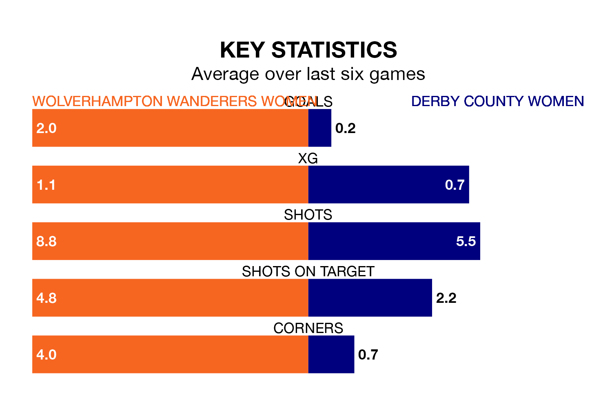

Wednesday's late match between Wolverhampton Wanderers Women and Derby County Women promises to be one for the neutrals, as two of the Women's National League Premier Division North's most free-scoring sides go head-to-head.
Ahead of the game at the New Bucks Head Ground, Wolverhampton Wanderers and Derby County sit joint-fourth in the goal-scoring charts, with 31 goals apiece.
Wolverhampton Wanderers are in reasonable form in the Women's National League Premier Division North, with three wins and two draws from their last six games.
With no wins and three draws over that period, Derby County's form is much worse – they have taken three points from 18, compared to the hosts' 11.
Wolverhampton Wanderers are fourth in the table after 16 games, of which they have won eight and drawn five, earning 29 points.
The away side are two places behind Wolverhampton Wanderers in sixth, with seven wins and four draws putting them on 25 points.
In the last five years, Wolverhampton Wanderers and Derby County have played each other on five occasions. Wolverhampton Wanderers won four of them and they drew once.
On average, Wolverhampton Wanderers scored 1.8 goals and Derby County 0.8 in those matches.
Their last meeting was on August 20, when Wolverhampton Wanderers won 2-1 away.
Wolverhampton Wanderers' last match was on April 7, a 5-1 win against Halifax Women.
Derby County drew 0-0 with Halifax Women last time out, on April 14.
Updated: 11:31 (UTC), 15/04/24